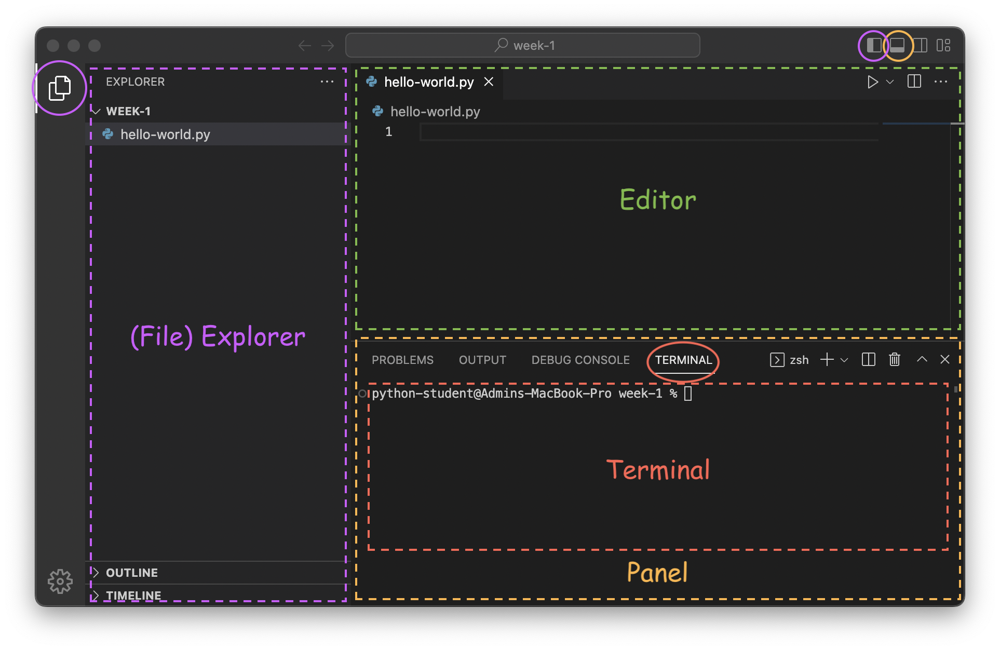

Lecture 1 — Introduction to Python#
Important
Warm up
Circle up and introduce
Name
Favorite game—video game, board game, sport, etc.
TIMECHECK: 7 minutes
Introduction
Course overview
Goals
Have fun
Make some cool projects
Learn general programming concepts
Gain an understanding of the Python language
Disclaimer
This is my first time teaching this
We may not get to all the material I prepared for today and that's ok
I'm learning from this as much as all of you / y'all are
Feedback form on the website
What to do if stuck / confused
Check the lecture notes
Ask someone next to you
Raise hand / get my attentio
Timecheck: 10 minutes
Fill out a madlib as a group
Timecheck: 15 minutes
VSCode#
VSCode is a popular choice of application for developing Python that lets us browse files, edit text, see problems with code in real time, and execute programs.

The interface has 3 main regions, shown in purple, green, and orange:

The file explorer (purple üü™)
Shows a tree view of the current folder
Selecting a file here will open it in the editor
Can be opened/closed by pressing either button circled in purple
The editor (green üü©)
Where we interact with files and write code
Console area (orange üüß)
Shows outputs from our code
Can be opened/closed by clicking the top right button circled in orange
Has 4 different tabs but we will only use the "Terminal" tab (red üü•)
The terminal lets us run commands and see output
Other elements of the interface:
The arrows in the top bar (<- ->) navigate back / forward through editors
The gear (⚙️) in the bottom left corner opens settings
The Interactive Interpreter (Console)#
Python has an interactive interpreter that allows you to type code and immediately see the result of evaluating that line.
We can launch the interpreter by running the command python in the terminal (see VSCode if you're not sure where the terminal is):
% python
Python 3.11.1 ... (a bunch of debug info)
Type "help", "copyright", "credits" or "license" for more information.
>>>
Here’s an example of adding two numbers in the interpreter:
>>> 1 + 1
2
Pressing the return key tells Python to evaluate the line.
Exiting#
When you are finished using the interpreter, type exit() and press the return key to exit the interpreter.
>>> exit()
Syntax#
Syntax is the term we use to describe the specific characters, symbols, spacing, or combinations of characters/symbols/spaces that we need to use for a programming language to understand what we are saying. Programming languages are much less skilled at understanding written text than humans, so we need to be very precise for them to understand.
Examples in English#
We can apply the concept of syntax to english writing to ground the idea of syntax in some concepts you may already be familiar with:
Sentences must start with a capital letter, and must end with
.,?, or!.This is a sentence. This sentence coveys excitement! Does this sentence ask a question?
This rules help us easily understand where sentences begin and end, and allows us to skip ahead or backwards by looking for punctuation and capitalization.
Peoples name's are capitalized.
Bobby Will Sofia
This rule helps us know if a word like 'White' is someone's last name, or a color, for instance; the phrases "the Rich family" versus "the rich family" have a different meaning.
Examples in Python#
For example, the python syntax for adding two numbers is to write each number with a plus symbol (+) in between, with any amount of spaces optionally included between the plus symbol and the numbers.
These are all valid syntaxes (and have the same meaning):
>>> 1+1
2
>>> 1 + 1
2
>>> 1 +1
2
However, these do not follow the syntax and are invalid:
>>> 1 1 +
File "<stdin>", line 1
1 1 +
^
SyntaxError: invalid syntax
>>> + 1 1
File "<stdin>", line 1
+ 1 1
^
SyntaxError: invalid syntax
Strings#
"String" is another word for "text" (because text is just a string of characters all strung together in a row).
Sentences and words and letters are all strings, but numbers can be strings too! Strings can contain any displayable character you can type with a keyboard. These are all strings:
"This is a string!"
"@#///$!"
"87"
"---"
":)"
Combining strings#
We can combine multiple strings into one using the plus symbol, +:
>>> "abc" + "def"
'abcdef'
This might be useful for constructing a date:
>>> "January" + "16th" + "2023"
'January16th2023'
We can add some spaces to make it look a little nicer:
>>> "January" + " " + "16th" + ", " + "2023"
'January 16th, 2023'
What about using + with numbers?#
What happens if we try to build a date using a number?
>>> "January" + " " + 16 + "th"
Traceback (most recent call last):
File "<stdin>", line 1, in <module>
TypeError: can only concatenate str (not "int") to str
We get an error! The message "can only concatenate str (not 'int') to str" is telling us that the plus operator, +, is not defined when providing a string and a number (although we can combine 2 strings or 2 numbers with +).
However, there is a simple way to combine numbers and strings...
Formatted string literals#
A formatted string literal (or "format string" for short) allows us to insert things (literals, variables, or expressions) into our strings:
>>> name = "Yoda"
>>> height = 0.66 # meters
>>> f"{name} is {height * 39.37} inches tall and {900} years old!"
'Yoda is 25.9842 inches tall and 900 years old!'
Tip
See Syntax for a refresher on what "syntax" means.
The syntax for formatted string literals is as follows:
Put an
fright before the first quote (no spaces)Surround any variables, literals, or expressions with curly braces,
{and}
Now we can construct our date from above (What about using + with numbers?):
>>> f"January {16}th"
'January 16th'
Caution
Do not put any literal strings inside format string or Python will get confused!
>>> f"Hello, {"world"}"
File "<stdin>", line 1
f"Hello, {"world"}"
^^^^^
SyntaxError: f-string: expecting '}'
Variables#
While literals are often necessary in a program, they are not very dynamic. Variables allow us to:
Store a value,
Access the value later, and even
Change the value as many times as we want!
Example#
>>> points = 0
>>> f"I have {points} points!"
'I have 0 points!'
>>> points = 100000
>>> f"I have {points} points!"
'I have 100000 points!'
(I added the extra newlines to try to make each separate step more clear.)
Syntax#
To store a value in a variable we write the name of the variable, the equals sign, and then the value:
>>> x = 32
The spaces around the = are optional, but highly encouraged!
To access the value stored in a variable, we just write the name of the variable:
>>> x * 2
64
>>> y = x / 2
>>> y
16
You can assign a new value to a variable as many times as you want!
>>> x = 3200
Naming#
Variable names can contain any of these characters:
Lowercase letters (
a,b, ... ,z)Uppercase letters (
A,B, ... ,Z)An underscore (
_)Numbers (
0,1, ...9)
Variable names may not begin with a number.
Important
What about using a
-symbol (e.g.,my-variable)?ASK: Why doesn't this work
This is the syntax for subtracting two variables called
myandvariable
Important
Skip in lecture ...
Python reserves some special names for itself that you are not allowed to use as names for your variables:
False await else import pass None break except in raise True class finally is return and continue for lambda try as def from nonlocal while assert del global not with async elif if or yield
Important
... skip in lecture.
Examples#
Here are some examples of valid names:
x
count
power_level
Here are some names that will cause errors
1person # Variable names cannot start with a number
class # The name `class` is reserved by Python
my-variable # The hyphen will be interpreted as a minus sign
Best practices#
Write variable names all lower case letters.
If a variable name contains multiple words, connect them with underscores—we can't use spaces or python would think each word was a variable name:
days_in_a_year = 365
Working with Files#
The interactive interpreter is a convenient way to experiment and iterate on ideas quickly, but is challenging to reuse.
Alternatively, we can write a series of lines in a file and then evaluate that file all at once.
Here's an example, in a file:
current_year = 2023
message = f"The year is {current_year}"
Creating a new file in VSCode#
To create a new file in VSCode:
Right click in the file explorer area (left hand side) underneath the existing files (currently
hello-world.py).
Select
New file...Type in a name (ending in
.py)Press enter
Running a program#
In the terminal, run python <file name>, where <file name> is the name of the file you authored (for example, year.py):
% python year.py
Unfortunately our program doesn't have any output, but in the next section we'll see how we can output to the screen!
Printing#
Unlike the interactive interpreter, running a script does not automatically display a value. In order to display values we can use the print function. This script:
print("Hi!")
Will produce the following output when run:
Hi!
Tip
print is a function, which we invoke (tell it to run) using parenthesis.
It can be very powerful to combine format string literals with print:
print(f"My name is {the_real_slim_shady}")